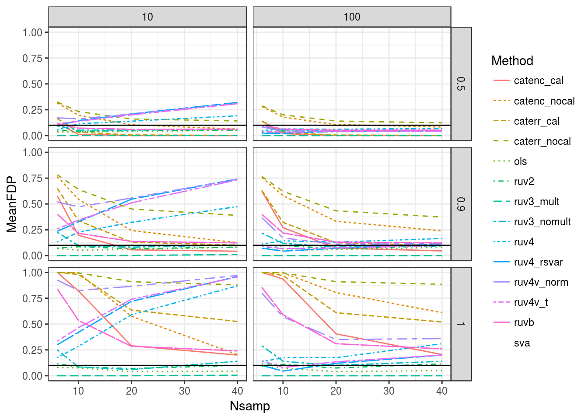
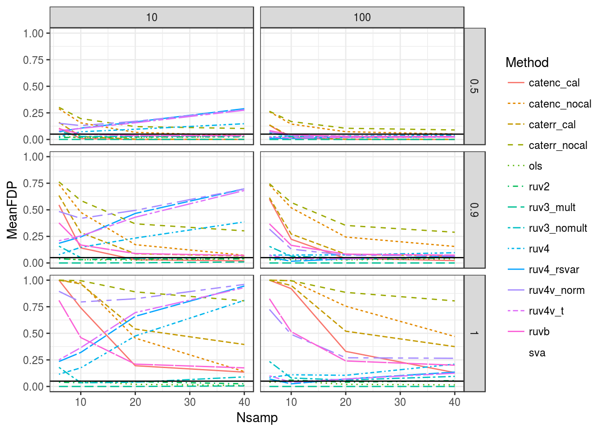

Here, I explore how various methods perform in terms of average FDR control. Of course, OLS should do very well on average, but let’s see how the other methods perform. In general, the best performing methods, besides OLS, are RUV2 and RUV3.
suppressMessages(library(dplyr))
library(ggplot2)
library(tidyr)
load("../output/sims_out/pvalue_matrices.Rd")
sout <- as_data_frame(sout)
sout$current_seed <- unlist(sout$current_seed)
sout$nullpi <- unlist(sout$nullpi)
sout$Nsamp <- unlist(sout$Nsamp)
sout$ncontrols <- unlist(sout$ncontrols)
head(sout)## # A tibble: 6 × 5
## pvalues current_seed nullpi Nsamp ncontrols
## <list> <dbl> <dbl> <dbl> <dbl>
## 1 <dbl [1,000 × 16]> 2223 0.5 6 10
## 2 <dbl [1,000 × 16]> 2224 0.5 6 10
## 3 <dbl [1,000 × 16]> 2225 0.5 6 10
## 4 <dbl [1,000 × 16]> 2226 0.5 6 10
## 5 <dbl [1,000 × 16]> 2227 0.5 6 10
## 6 <dbl [1,000 × 16]> 2228 0.5 6 10get_fdp <- function(pmat, fdr = 0.1) {
which_method <- colnames(pmat) != "which_null" & colnames(pmat) != "control_genes"
which_null <- as.logical(pmat[, colnames(pmat) == "which_null"])
control_genes <- as.logical(pmat[, colnames(pmat) == "control_genes"])
response_vec <- which_null[!control_genes]
fdp_vec <- c()
for (index in 1:sum(which_method)) {
if (which_method[index]) {
predictor <- stats::p.adjust(p = pmat[!control_genes, index], method = "BH")
fdp <- mean(response_vec[predictor < fdr])
if(is.nan(fdp)) {
fdp <- 0
}
fdp_vec <- c(fdp_vec, fdp)
}
}
names(fdp_vec) <- colnames(pmat)[which_method]
return(fdp_vec)
}
fdp_10 <- sapply(sout$pvalues, FUN = get_fdp, fdr = 0.1)
dat <- as_data_frame(apply(as_data_frame(cbind(t(fdp_10), sout[, -1])), 2, unlist))
d2 <- filter(dat, nullpi == 1)
all(select(d2, ols:ruvb) == 0 | select(d2, ols:ruvb) == 1)## [1] TRUEsumdat <- dat %>% gather(key = "Method", value = "FDP", ols:ruvb) %>%
group_by(nullpi, Nsamp, ncontrols, Method) %>%
summarize(MeanFDP = mean(FDP)) %>%
ungroup()
ggplot(sumdat, mapping = aes(x = Nsamp, y = MeanFDP, color = Method, linetype = Method)) +
facet_grid(nullpi ~ ncontrols) +
geom_line() +
theme_bw() +
geom_hline(yintercept = 0.1)
Same thing but with FDR control set to 0.05
fdp_05 <- sapply(sout$pvalues, FUN = get_fdp, fdr = 0.05)
dat <- as_data_frame(apply(as_data_frame(cbind(t(fdp_05), sout[, -1])), 2, unlist))
d2 <- filter(dat, nullpi == 1)
all(select(d2, ols:ruvb) == 0 | select(d2, ols:ruvb) == 1)## [1] TRUEsumdat <- dat %>% gather(key = "Method", value = "FDP", ols:ruvb) %>%
group_by(nullpi, Nsamp, ncontrols, Method) %>%
summarize(MeanFDP = mean(FDP)) %>%
ungroup()
ggplot(sumdat, mapping = aes(x = Nsamp, y = MeanFDP, color = Method, linetype = Method)) +
facet_grid(nullpi ~ ncontrols) +
geom_line() +
theme_bw() +
geom_hline(yintercept = 0.05)
Notes:
sessionInfo()## R version 3.3.2 (2016-10-31)
## Platform: x86_64-pc-linux-gnu (64-bit)
## Running under: Ubuntu 16.04.2 LTS
##
## locale:
## [1] LC_CTYPE=en_US.UTF-8 LC_NUMERIC=C
## [3] LC_TIME=en_US.UTF-8 LC_COLLATE=en_US.UTF-8
## [5] LC_MONETARY=en_US.UTF-8 LC_MESSAGES=en_US.UTF-8
## [7] LC_PAPER=en_US.UTF-8 LC_NAME=C
## [9] LC_ADDRESS=C LC_TELEPHONE=C
## [11] LC_MEASUREMENT=en_US.UTF-8 LC_IDENTIFICATION=C
##
## attached base packages:
## [1] stats graphics grDevices utils datasets methods base
##
## other attached packages:
## [1] tidyr_0.6.0 ggplot2_2.2.1 dplyr_0.5.0
##
## loaded via a namespace (and not attached):
## [1] Rcpp_0.12.9 knitr_1.15.1 magrittr_1.5 munsell_0.4.3
## [5] colorspace_1.3-2 R6_2.2.0 stringr_1.1.0 plyr_1.8.4
## [9] tools_3.3.2 grid_3.3.2 gtable_0.2.0 DBI_0.5-1
## [13] htmltools_0.3.5 yaml_2.1.14 lazyeval_0.2.0 assertthat_0.1
## [17] rprojroot_1.2 digest_0.6.11 tibble_1.2 reshape2_1.4.2
## [21] evaluate_0.10 rmarkdown_1.3 labeling_0.3 stringi_1.1.2
## [25] scales_0.4.1 backports_1.0.5This site was created with R Markdown